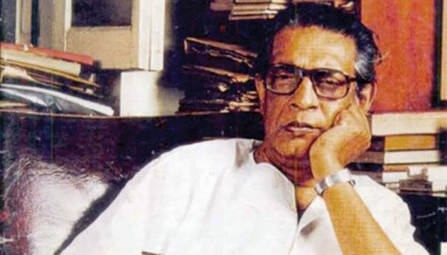

Ray created two popular fictional characters in Bengali children's literature— Pradosh Chandra Mitter (Mitra) alias Feluda, a sleuth, and Professor Shonku, a scientist. The Feluda stories are narrated by Tapesh Ranjan Mitra aka Topshe, his teenage cousin, something of a Watson to Feluda's Holmes. The science fiction stories of Shonku are presented as a diary discovered after the scientist had mysteriously disappeared.
Ray also wrote a collection of nonsense verse named Today Bandha Ghorar Dim, which includes a translation of Lewis Carroll's "Jabberwocky". He wrote a collection of humorous stories of Mullah Nasiruddin in Bengali.
His short stories were published as collections of 12 stories, in which the overall title played with the word twelve (for example Aker pitthe dui, or literally "Two on top of one"). Ray's interest in puzzles and puns is reflected in his stories. Ray's short stories give full rein to his interest in the macabre, in suspense and other aspects that he avoided in film, making for an interesting psychological study. Most of his writings have been translated into English. Most of his screenplays have been published in Bengali in the literary journal Eksan. Ray wrote an autobiography about his childhood years, Jakhan Choto Chilam (1982), translated to English as Childhood Days: A Memoir by his wife Bijoya Ray. In 1994, Ray published his memoir, My Years with Apu, about his experiences of making The Apu Trilogy
